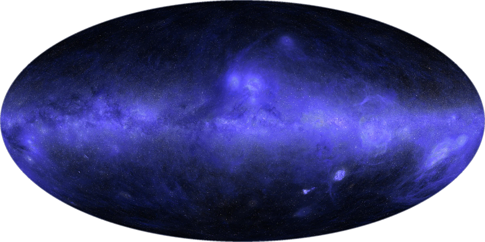
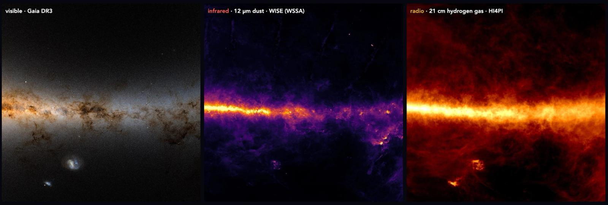
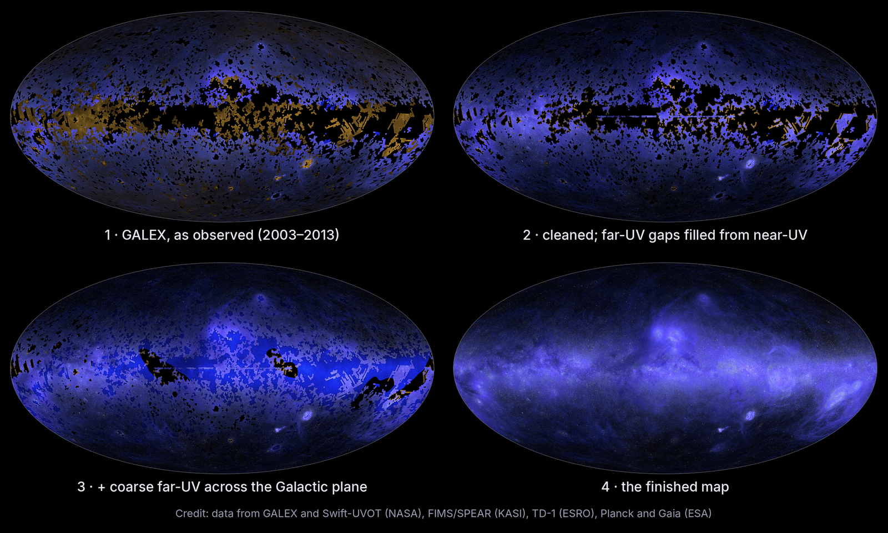
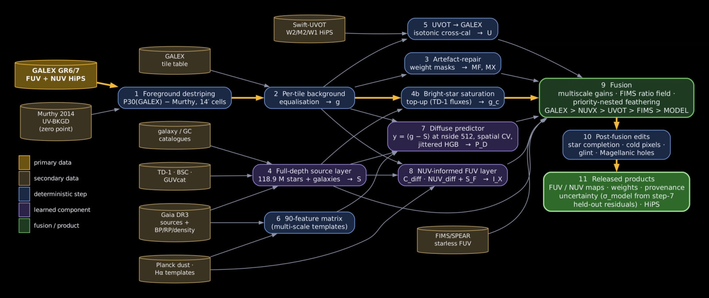
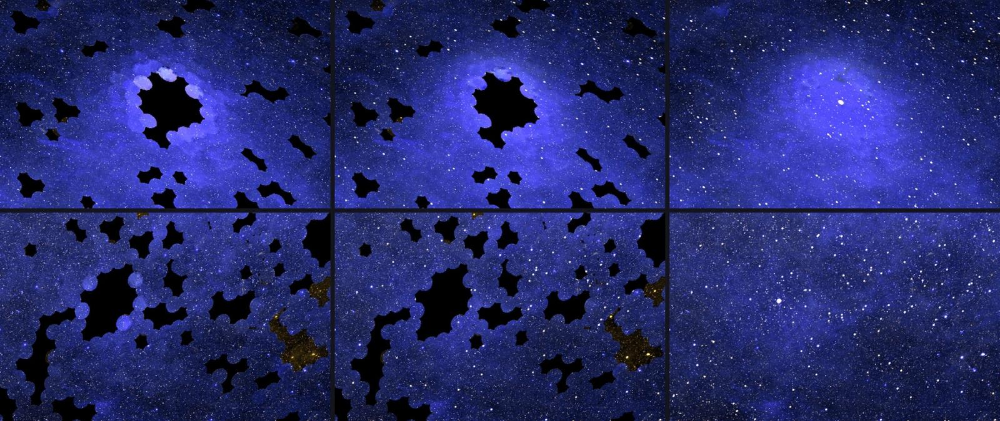

Here, Brice Ménard, an astrophysicist at Johns Hopkins University and a researcher at Anthropic, explains how he worked with Claude Science to produce the first complete map of the sky in UV light. The map will be a valuable educational tool, allowing students to see in detail the rich structure of the Milky Way visible at this wavelength.

When I teach astrophysics, I often begin by showing my students that the sky looks completely different depending on the wavelength you observe it in. Each brings out different features. In visible light, one mainly sees stars. Switching to infrared reveals the glow of tiny grains of dust concentrated in a band along the Milky Way. In radio waves, the stars and dust fade and hydrogen gas—the raw material from which new stars form—becomes visible. And in X-rays, one can see violent phenomena, like stars exploding, or matter spiraling into a black hole. Together, these features let astronomers understand how gas collapses into stars, how stars seed the galaxy with dust, and how galaxies like ours take shape.

When talking about UV light and how it reveals dust illuminated by starlight, from the clouds around young stars to the rings left by stellar explosions, I have always had to apologize. The only UV map I could show was full of holes.
Why no complete UV map existed
UV light is absorbed by the ozone layer of the atmosphere, so to observe the universe in the UV spectrum, one has to go to space. Over the past 50 years, space telescopes have observed parts of the sky in UV and published their data. But much remains unobserved.
The largest dataset comes from NASA’s GALEX mission, which ran from 2003 to 2013 and imaged about two-thirds of the sky in some 38,000 separate observations. But GALEX deliberately skipped locations with very bright stars, including those on the plane of the Milky Way (the flat disk of the galaxy, where stars are most densely packed), because of the risk of damaging the satellite’s detectors. Other space telescopes, such as NASA’s Swift and South Korea’s FIMS/SPEAR, acquired additional data, but even in those combined datasets, there are a number of missing pieces.
Statistical techniques exist to estimate the missing data and create a complete UV map of the sky. But doing this properly takes weeks of painstaking work, involving meticulous calibrations at the level of individual pixels and sophisticated, repeated analyses. Understandably, astrophysicists tend to put this kind of work aside in pursuit of more pressing research. Most fields have a backlog of similar projects, ones that would explain a key concept or help other researchers, but which never rise high enough on anyone’s list to get done. With Claude, it has become easier to tackle such lower-priority work.
Building the missing map

This summer, I set out to make a complete UV map of the sky with Claude Science. The instructions were simple to state, but not to carry out: gather every available UV dataset, put them all on a common scale, merge them into a single map, and fill in every patch of sky that no UV telescope has ever observed.
To do this, Claude orchestrated a team of AI agents. First, the agents searched the web for publicly available astronomical UV surveys, each comprising a massive collection of individual data points or images—tens of thousands of images, in the case of NASA’s GALEX mission—taken over several years and under varying conditions.
After downloading the data, the agents had to make each survey internally consistent, so that an image taken in one time period could be compared with an image taken in another. This required paying special attention to the regions around bright stars. Just as the sun or a streetlight can add glare to a photo here on Earth, stars can add glare to an image of the sky captured by a space telescope. That glare needed to be removed before the fainter UV light around the stars could be measured precisely. Many agents, working in parallel on different regions of the sky, were able to even out these differences.
Next, the surveys had to be combined. The datasets were collected by different instruments on different telescopes, and each one captures the ultraviolet sky slightly differently, so they had to be cross-calibrated against one another, redrawn at the same resolution, and mapped onto a common coordinate system before they could be merged into one map. I gave high-level instructions to Claude on how to do so, and Claude set a team of agents on the tasks.
Then came the hardest part: filling in the gaps in the map. Roughly a third of the sky has never been observed in UV. To account for those blank spots, I asked Claude Science to use a technique called inpainting—a common process in machine learning, in which a model trained on millions of photos learns how each part of an image relates to its surroundings, and uses that knowledge to restore damaged or missing portions of an image.
Claude combined this approach with additional information we had at our disposal. Where UV data is missing, we do have observations at other wavelengths, including visible, infrared, and radio. Using the two-thirds of the sky that has been mapped in UV, Claude learned how UV brightness relates to these other wavelengths. It then applied that relationship to the third of the sky for which no UV data exists, and estimated what it should look like at each point, and how confident it was in that estimate.
To check how accurate the model’s predictions were, I asked Claude to take regions for which we already have UV data and deliberately hide parts of them, creating the kinds of blank patches inpainting is designed to fill. The model had to use what it had learned to complete the picture without access to the real values. After several rounds of refinement, it was able to estimate the hidden data to within about 10% of the real UV measurements, a difference almost imperceptible to the human eye.
Finally, on top of this diffuse inpainted background, Claude added estimates of UV light from more than 100 million individual stars inferred from measurements by the European Space Agency’s Gaia satellite in visible light. The first version of the full UV map of the sky was complete.

Trial and error
Claude did not get everything right on the first try. Looking through the processed images one evening, for example, I noticed something off in one of the dimmest fields: faint circles, each a touch brighter or darker than its neighbors.
These were the footprints of individual GALEX observations. Each GALEX image captures a circular patch of the sky, and each contains a slight, not-quite-uniform UV glow from the Earth’s atmosphere. If that glow is not fully removed, each circle appears slightly brighter or darker than those around it. Claude had listed this as a known issue at the start of the project, but the map had still passed two rounds of review by other agents without the problem being caught.
I told Claude, “I can see discs with the imprint of individual observations; can you correct that?” The agents traced the problem back to the leftover atmospheric glow. Claude then corrected for that glow in all 38,000 observations. After a couple of hours of processing, the circles were gone.

The final map
Together, Claude and I created more than a dozen successive versions of the map, each more refined than the last. Our collaboration spread over several days and took on a predictable rhythm: I would have several exchanges within Claude Science to plan the next steps, then Claude would independently perform hours of computations, while I went back to working on other projects.
The finished map shows the entire sky in UV light, and displays many interesting structures: dust clouds glowing around luminous young stars, giant dust rings and loops tracing gas bubbles blown out by the explosions of massive stars. Far from the galactic plane, faint filaments of dust thread across the sky, lit by the combined starlight of the entire galaxy. Below the plane sit the Large and Small Magellanic Clouds, two small neighboring galaxies bright with young stars. I think it’s beautiful—and it can join the other canonical maps in helping generations of students appreciate the variety of physical processes at work in our galaxy.
For once, I was able to pursue a project like this without sacrificing time I would otherwise have devoted to research. I suspect many scientists can think of a map, a figure, or a resource they’ve been putting off for the same reason.
Acknowledgments
The measurements used to create this map are from GALEX and Swift (NASA), FIMS/SPEAR (Korea), TD-1 (Europe), and Planck and Gaia (ESA). I’m grateful to everyone involved in these missions and in making the data public. Many agents working in Claude Science contributed the patient labor of putting this map together. My contribution was limited to guiding them in the process.
Footnotes
- The entire sky, with the galactic center in the middle, in the ultraviolet (combining far-UV 154 nm and near-UV 232 nm). About a third of this map, including much of the galactic plane, was predicted with Claude Science using the method outlined in this post. Additional layers of the map label each pixel as “measured” or “predicted” and provide uncertainty estimates; you can see it here.